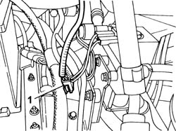
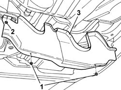
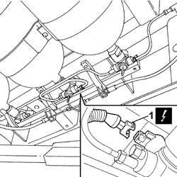

1044E90 CABLE LOOM FOR CNG CANISTER SOLENOID VALVES - R.R.
- Path
- Procedures > 10 ENGINE UNIT > 1044 FUEL CIRCUIT PUMP/S AND DEVICES > 1044E GAS PRESSURE CONTROL DEVICE > 1044E90 CABLE LOOM FOR CNG CANISTER SOLENOID VALVES - R.R.
- Kind
- repair procedure (removal / refitting; the operation number is the code)
- Applies to
- engines: 2.0 16V; all production periods
- Interactive page
- https://sloeber94.github.io/elrnDB-fDct/en/#/244000778
Applies to: engines: 2.0 16V; all production periods
 Removing
Removing
 Refitting
Refitting- Disconnect the negative battery terminal.
- Position the vehicle on the lift.
1. Disconnect the electrical connection for the engine bay methane wiring loom coupling.

Applies to: engines: 2.0 16V; all production periods
- Secure the end of the wiring to a probe.
Op. 1042E60 CNG CYLINDER UNIT PROTECTION SEAL - R R
1. Undo the retaining nuts.
2. Remove the fastening studs.
3. Remove vertical guard from its seat.

Applies to: engines: 2.0 16V; all production periods
- Release the electrical wiring from the fastenings on the body and remove.

Applies to: engines: 2.0 16V; all production periods
Refitting
Removing- Fit the electrical wiring and connect the electrical connections to the cut-off solenoids.
- Secure the electrical wiring to the body.
- Move the electrical wiring to the engine bay and connect the engine bay methane wiring loom coupling electrical connection.
- Position the vertical guard and secure with nuts.
- Fit the studs to the guard.
Op. 1042E60 CNG CYLINDER UNIT PROTECTION SEAL - R R
- Remove the vehicle from the lift.
- Connect the negative battery terminal.